서울 히어로 · 실제 Godot 적용 · 05차 수정
HUD·유리 카드·로비·게이트24 적용 결과
지금까지 승인한 디자인과 최신 피드백을 실제 게임 화면에 연결했습니다. 아래 이미지는 시안 프로젝트가 아닌 운영 화면 클래스에서 캡처했습니다.
캡처 실행에서는 저장 쓰기와 전투 진행을 차단했습니다. 화면은 실제 클래스·PNG·콘텐츠를 사용하며, 구매·잠금·리롤·음량·선택 연결은 메모리 안에서 확인했습니다. 게임의 가격·전투·저장 규칙은 유지합니다.
01
전투 HUD
마력석·지갑을 체력 표기 옆 한 줄로 줄였습니다. 두 재화는 체력바의 가로 범위 안에 있으며 체력바를27px, 무기 줄을25px 올렸습니다.

915×412 · 실제 런타임 화면 클래스 · 01-hud.png
02
로비
책·설정·음악은 차분한 뉴모피즘 PNG를 사용합니다. 큰 작전 단말과 스캔광, 남색 출동 버튼도 실제로 연결했습니다.
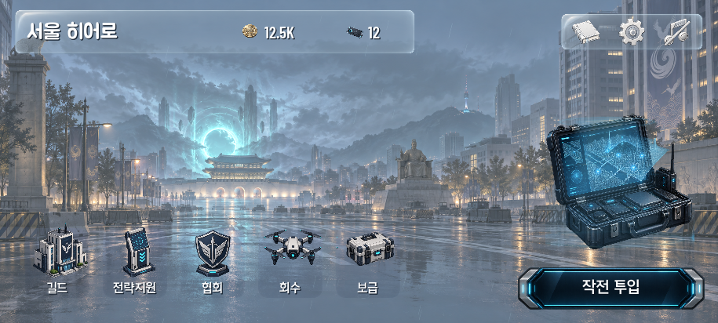
915×412 · 실제 런타임 화면 클래스 · approved-lobby.png
03
게이트24 · 무기
편의점 진열대와 단일 상단 메뉴, 연한 노란 구매면을 적용했습니다. 잠금과 구매 불가 상태는 별도로 유지됩니다.
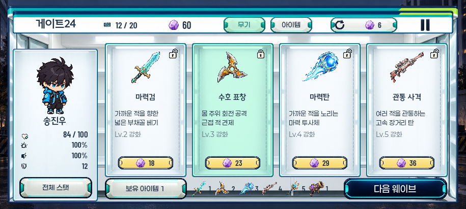
915×412 · 실제 런타임 화면 클래스 · qa-shop-weapons.png
04
게이트24 · 아이템
실제 아이템 효과·패널티·가격을 표시합니다. 상품 안에는 스크롤이 없습니다.
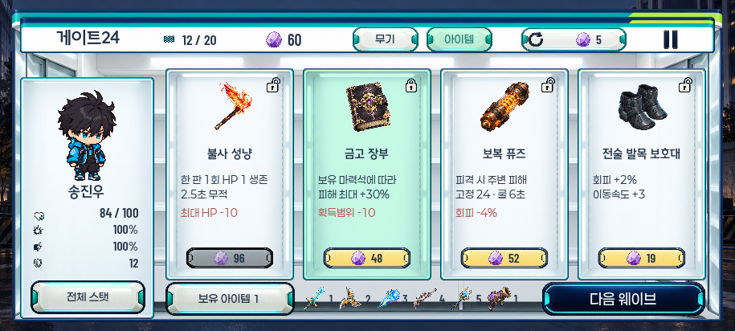
915×412 · 실제 런타임 화면 클래스 · approved-shop.png
05
각성자 선택
고정된 서울 배경과 유리 카드, 오른쪽 원화·핵심 특성·스크롤 상세판입니다.
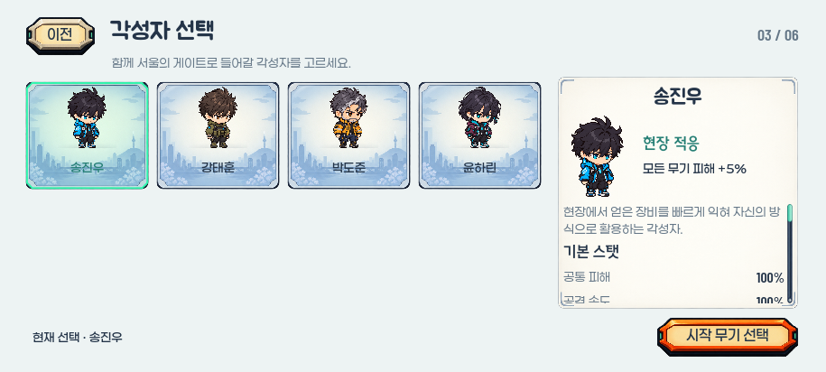
915×412 · 실제 런타임 화면 클래스 · 04-character.png
06
시작 무기 선택
원화 옆에 역할과 Lv.1 공격 정보를 놓고 나머지 내용은 내부에서 스크롤합니다.
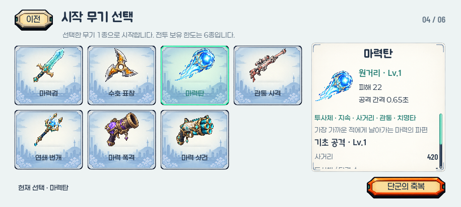
915×412 · 실제 런타임 화면 클래스 · 05-weapon.png
07
단군의 축복 선택
원화·보유 단계의 핵심 효과와 세로 선택 목록을 연결했습니다.
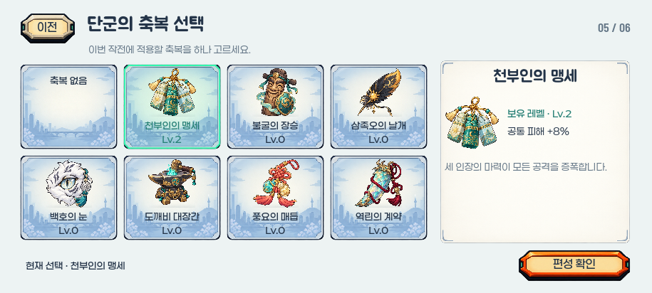
915×412 · 실제 런타임 화면 클래스 · 06-blessing.png
08
맵 선택
오른쪽 제목과 설명의 안쪽 여백을 넓혔습니다.
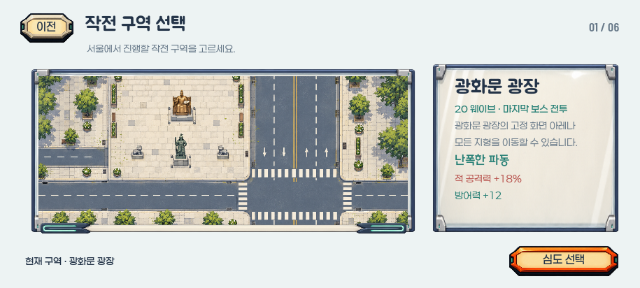
915×412 · 실제 런타임 화면 클래스 · 02-map.png
09
심도 선택
독립 심도 선택 화면을 유지합니다.
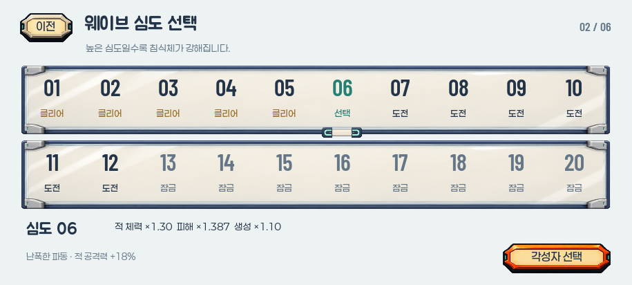
915×412 · 실제 런타임 화면 클래스 · 03-depth.png
10
작전 편성 확인
불필요한 심도·웨이브 표시를 빼고 원화·이름·설명을 세 행 안에 다시 정렬했습니다.
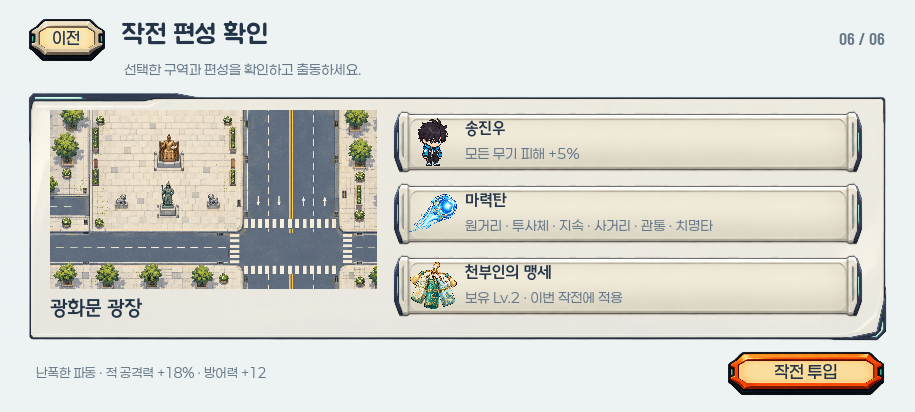
915×412 · 실제 런타임 화면 클래스 · 07-formation.png
11
영구 성장
왼쪽 원화와 단계 표기를 구획 중앙에 맞췄습니다. 실제 연결된 성장 정보만 표시합니다.
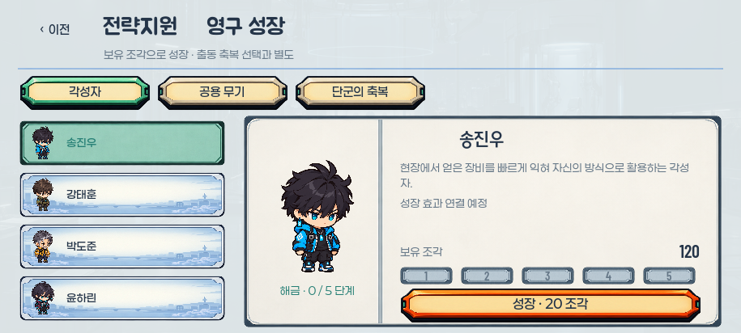
915×412 · 실제 런타임 화면 클래스 · 08-growth.png
12
자료집
유리 썸네일과 책등에서 떨어진 상세 내용면을 사용합니다.
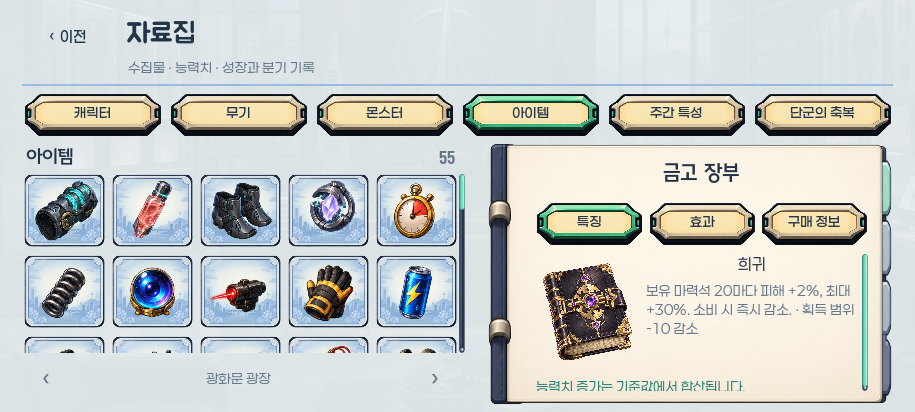
915×412 · 실제 런타임 화면 클래스 · 09-archive.png
13
설정
제목 중앙 정렬과 고밀도 PNG 음량 트랙·손잡이를 사용합니다.
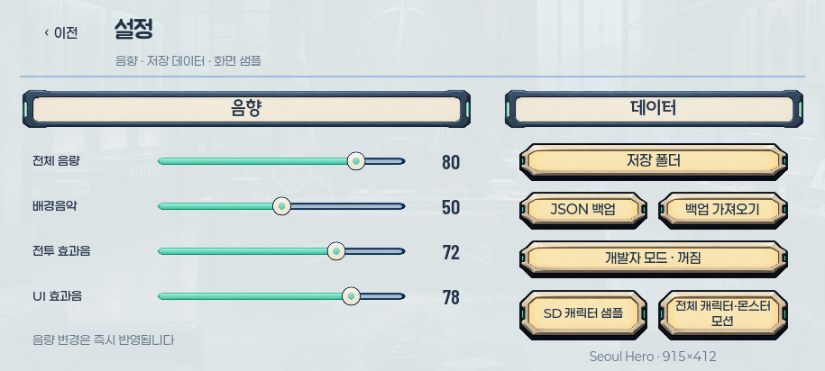
915×412 · 실제 런타임 화면 클래스 · 10-settings.png
14
일시정지
제목과 정보·버튼 묶음을 이미지 내용면의 중앙에 정렬했습니다.
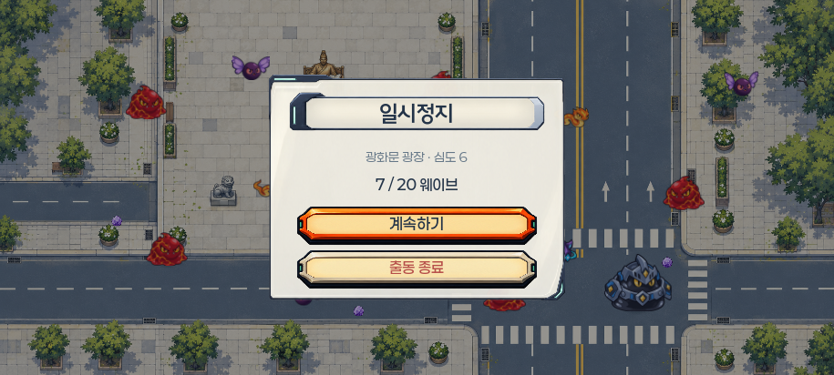
915×412 · 실제 런타임 화면 클래스 · 11-pause.png
15
타이틀 · 이어할 게임 있음
이어하기와 새로하기는 같은 19px 글자와 같은 버튼 높이입니다.

915×412 · 실제 런타임 화면 클래스 · approved-title.png
16
타이틀 · 이어할 게임 없음
이어할 게임이 없을 때는 시작하기를 표시합니다.
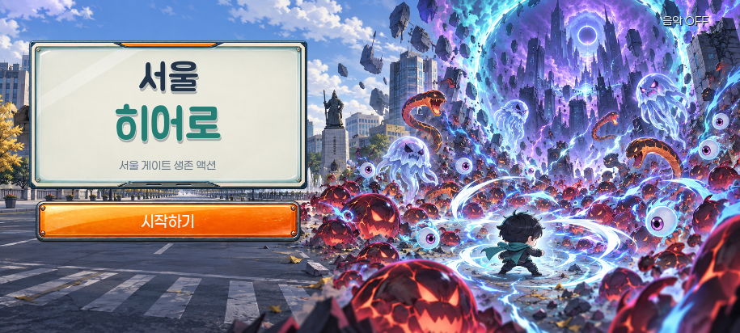
915×412 · 실제 런타임 화면 클래스 · qa-title-no-run.png